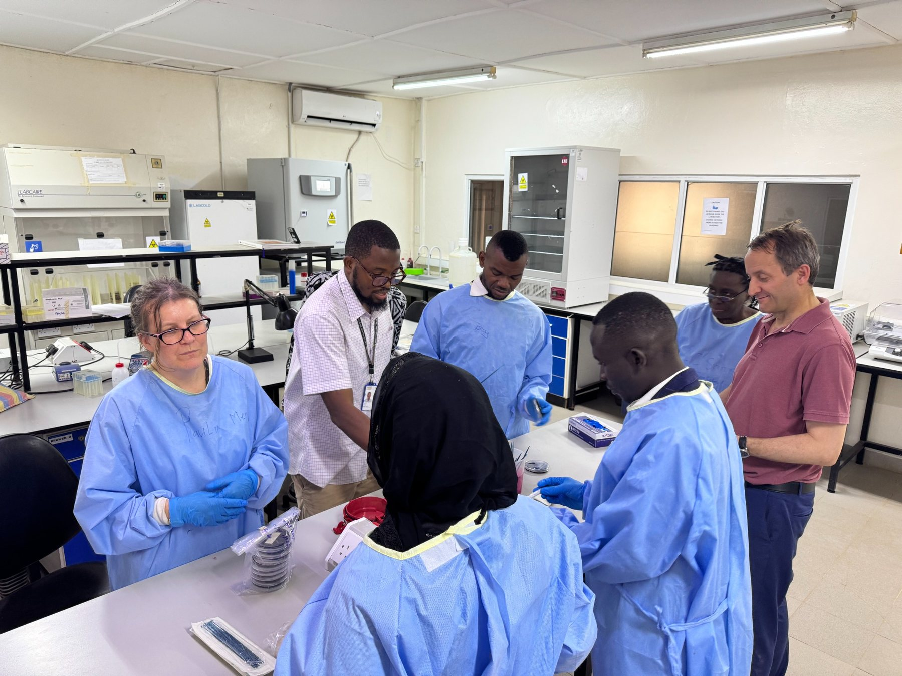
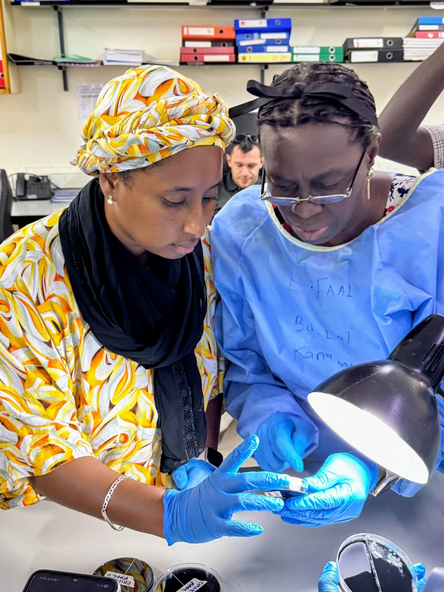

One Health · Génomique · Prévention
De la génomique des pathogènes à la prévention.
CCC associe études de terrain, génomique, épidémiologie et modélisation pour identifier les voies de transmission de Campylobacter et les leviers de prévention.
Aperçu du projet
CCC en bref
Voir les données d’inclusion, d’échantillonnage et de laboratoire →
Notre approche
Suivre la transmission. Identifier les leviers d’action.
Échantillonner
Étudier conjointement les populations humaines, animales et les environnements afin d’identifier les voies d’exposition.
Séquencer
Combiner séquençage du génome entier (WGS) et métagénomique pour relier souches, réservoirs et maladie.
Prévenir
Combiner attribution de source et modélisation pour cibler les interventions les plus pertinentes en amont.



Explorer
Ressources
ScienceÉchantillonnage, génomique, attribution de source et modélisation des interventions.ÉquipeÉquipe de coordination scientifique et expertises des partenaires.RessourcesProtocoles publics, données et documents réservés aux membres authentifiés.Tableau de bordDonnées agrégées sur les inclusions, l’échantillonnage et les analyses de laboratoire.Données et codeJeux de données publics, dépôts et ressources d’analyse.ActualitésÉtapes du projet, publications, formations et actualités.
À la une
Actualités
25 septembre 2026
L’échantillonnage débute en Gambie
Les inclusions et l’échantillonnage coordonné chez l’humain, l’animal et dans l’environnement sont désormais en cours, avec 28 cas diarrhéiques inclus et 148 prélèvements humains collectés au cours des premières semaines.
Lire l’actualité de terrain →septembre 2026
Nouveau site web et tableau de bord
CCC dispose désormais d’un site public simplifié et d’un tableau de bord synthétique présentant les données agrégées du projet.
En savoir plus →juin 2026
Protocole GETCampy publié
Le protocole GETCampy d’épidémiologie génomique et d’attribution de source est disponible dans BMJ Open.
Lire l’article →Soutien
CCC est soutenu par la subvention Wellcome Trust 088786/C/09/Z et s’appuie sur GETCampy, MRC MR/V001213/2.